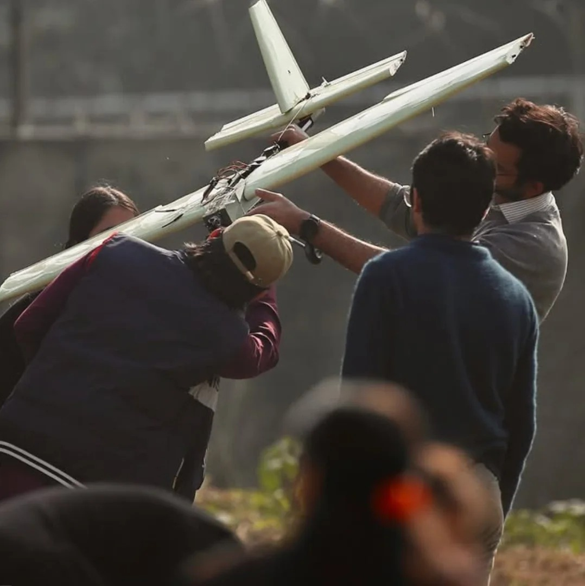
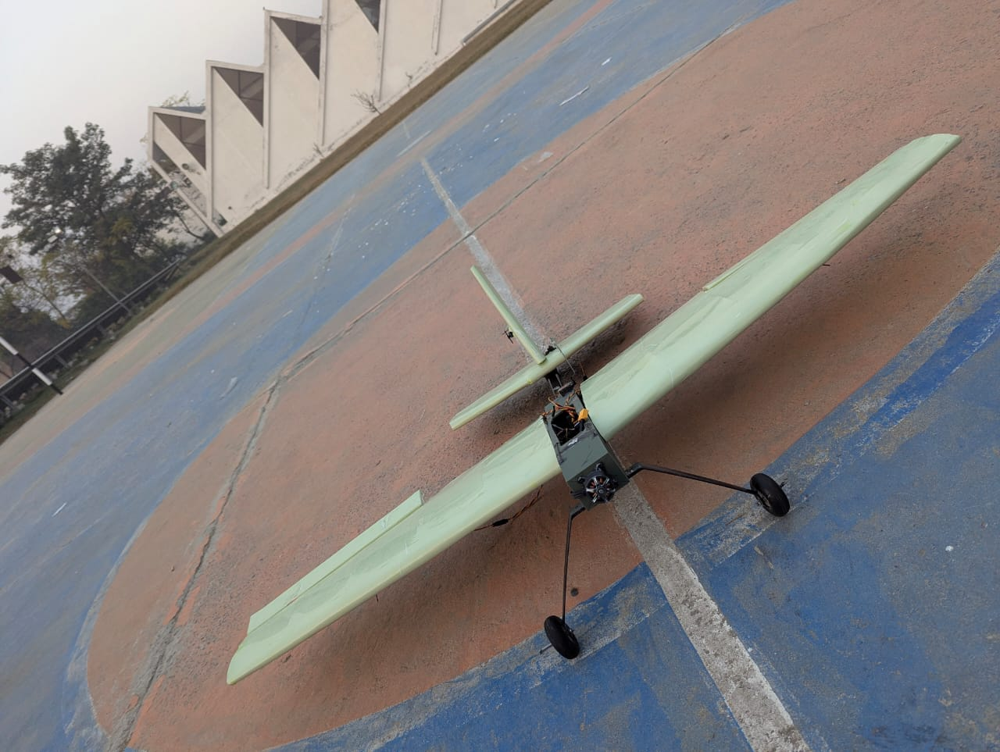
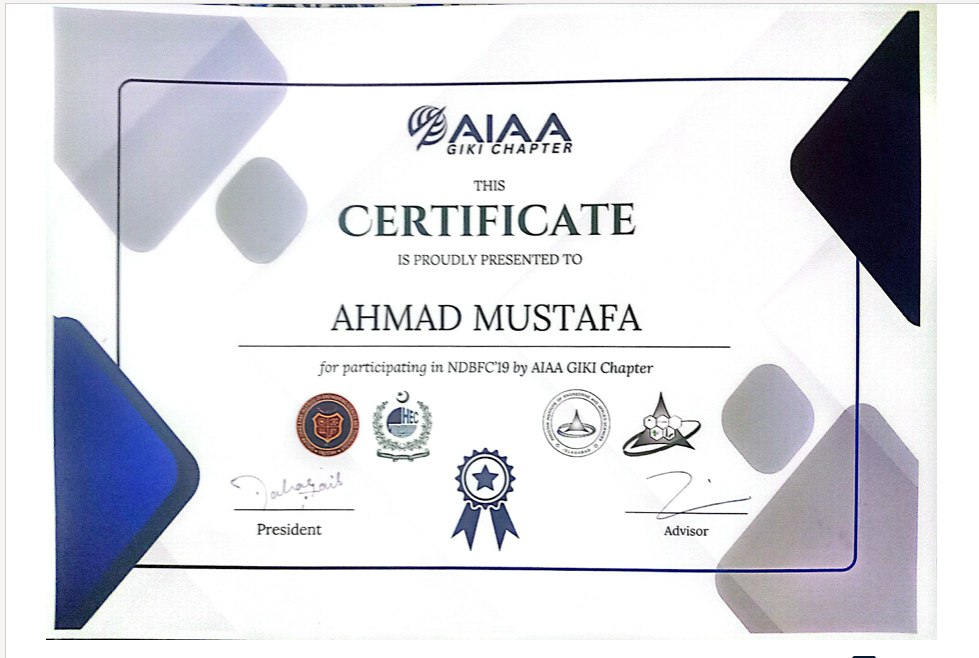

Design Build Fly Competition · Fixed-Wing Category
Fixed-Wing Aircraft — DBFC
A fixed-wing aircraft competition project developed by Team NIMBUS, combining aircraft design, fabrication, testing, and flight operations.
TEAM LEADERSHIP
Team Captain — Team NIMBUS
I coordinated Team NIMBUS during aircraft development, preparation, and competition activities.

COMPETITION
Design Build Fly Competition
Team NIMBUS participated in the Design Build Fly Competition in the fixed-wing category. The project provided practical exposure to aircraft development beyond simulation and coursework.
ENGINEERING WORK
We developed a fixed-wing aircraft for the Design Build Fly Competition at GIKI. I worked on aerodynamic analysis and NACA 2412 airfoil selection in XFLR5, aircraft geometry, CAD design, and component sourcing.

Front view of the Team NIMBUS fixed-wing aircraft developed for the competition.
LEADERSHIP
My contribution
As Team Captain, I led design, manufacturing, and component sourcing, including preparation of the bill of materials. The build incorporated a 3D-printed fuselage and qualified for the competition flight round.
EVIDENCE
Certification
Official evidence of participation in the Design Build Fly Competition.

Final Design & Lessons Learned
The project gave me practical experience in fixed-wing aerodynamic and structural design. I worked with the relationships between lift, drag, thrust, airspeed, and takeoff requirements.
I used XFLR5 to examine aerodynamic behavior and refine the wing configuration. CAD design and fabrication connected the analysis with component placement, aircraft assembly, and weight constraints.
Working on control surfaces, including ailerons and elevators, strengthened my understanding of aircraft stability and control. The experience connected analysis with the practical demands of building and testing an aircraft.